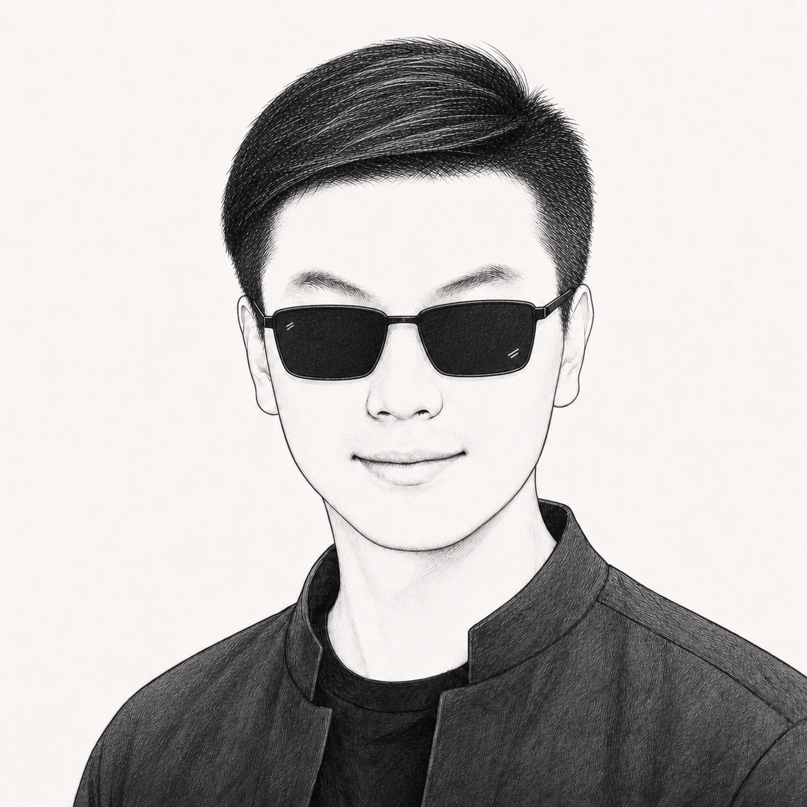

An Wang 王安
Research Scientist · Tencent Hunyuan LLM Team, Beijing
I received my Ph.D. in Computer Science from Institute of Science Tokyo (formerly Tokyo Institute of Technology) in June 2025, advised by Prof. Naoaki Okazaki.
I am currently working at Tencent on the LLM Pretraining Team (Qingyun Project) of Hunyuan, as a core contributor to Hy3 (ranked among the top models by usage on OpenRouter since release), mainly responsible for model architecture design and base model production.
My research focuses on model architecture, training strategies, and scaling laws for large language models. I am also passionate about AI agents and automating complex workflows.